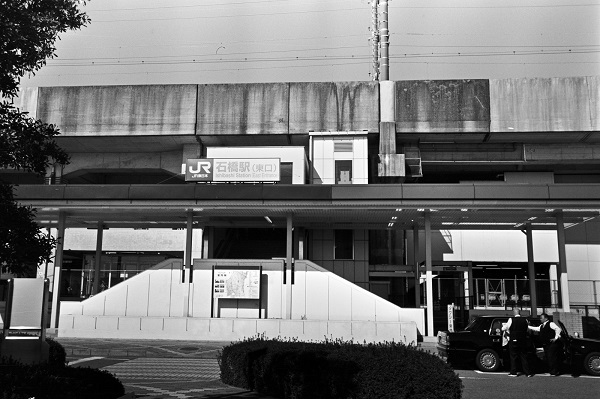
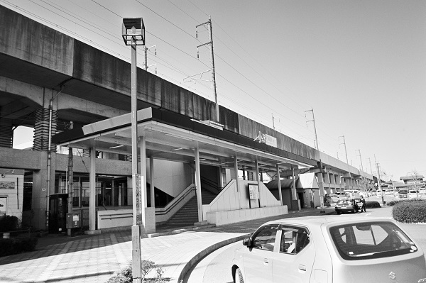
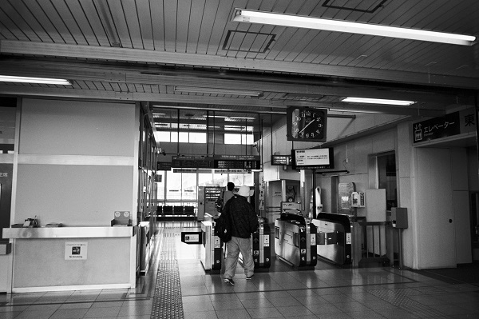
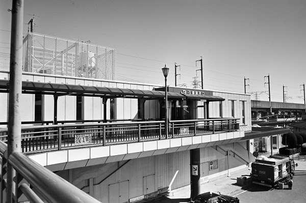
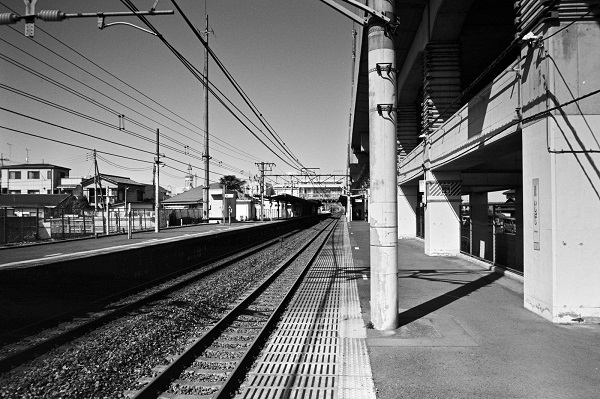
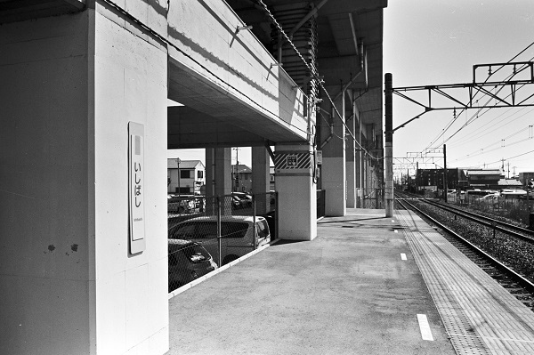

THKH22_宇都宮線
JR 石橋駅 Ishibashi
自治医大駅←← 宇都宮線 →→ 雀宮駅

2019/3/24 ﾍｷｻｰRF ｶﾗｰｽｺﾊﾟｰ25mm ｱｸﾛｽ

2019/3/18 ﾍｷｻｰRF ｶﾗｰｽｺﾊﾟｰ25mm ｱｸﾛｽ

2019/3/18 ﾍｷｻｰRF ｶﾗｰｽｺﾊﾟｰ25mm ｱｸﾛｽ

2019/3/18 ﾍｷｻｰRF ｶﾗｰｽｺﾊﾟｰ25mm ｱｸﾛｽ

2019/3/18 ﾍｷｻｰRF ｶﾗｰｽｺﾊﾟｰ25mm ｱｸﾛｽ

2019/3/18 ﾍｷｻｰRF ｶﾗｰｽｺﾊﾟｰ25mm ｱｸﾛｽ
戻る ﾎｰﾑ